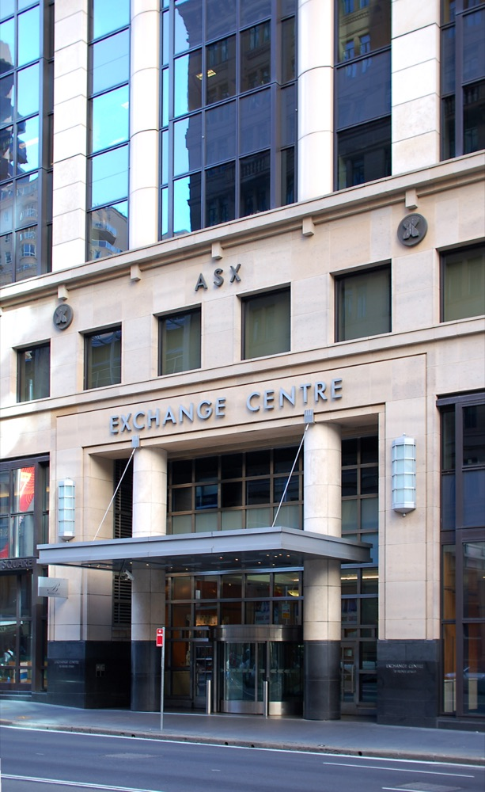
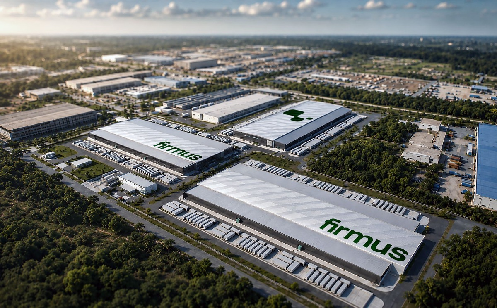

Executive Summary
This article reads the withdrawal of the AI data center company Firmus from the Australian Securities Exchange on October 9, 2026, together with the question of what the valuation on the table was counting. Nvidia holds 7.2% of the company, and had the listing gone ahead it would have been the biggest float on the Australian market since Telstra in 1997.
The snag sat in one place. What Firmus runs and draws power through today comes to 46MW, while the A$44 billion valuation leaned on the more than 900MW of capacity the company has under contract with customers. Closing that distance takes five more sites, built within the next 24 months. That gap is what investors weighed this time. Advisers looked at cutting the price per share from A$11 to A$8.25, and the offer was called off anyway.
The facts and figures carried here come from ABC News reporting, Forbes Australia reporting, Guardian reporting, and the announcement Firmus issued itself. The point Section 3 makes about currency conversion, and the move Section 4 makes toward data work, belong to this article rather than to any party in the story.
Key figures
Four numbers. The first two are the money riding on this offer, and the last two are what that money was leaning on.
Source: ABC News (2026-10-09), Forbes Australia, Firmus announcement.
A$44 billion
Valuation the offer aimed at
A$11 a share was to raise about A$7 billion
6 times
Forecast debt over forecast operating earnings
US$30 billion of debt against US$5 billion of operating earnings, both 2028 forecasts
46MW
Operating capacity today
Capacity in development is 865MW, more than eighteen times as much
2 sites / 5 sites
Running / in development
The five in development are targeted to go live within 24 months
The Offer Stopped Two Weeks Before the Listing Date
Firmus builds the data centers used for AI training and rents out the compute inside them. It is rooted in Australia and Singapore and is extending into Indonesia and Malaysia, and Nvidia holds 7.2% of it. The large compute build in Australia carries the name Project Southgate.
The company was due to list on the Australian Securities Exchange on October 23. At A$11 a share it would have raised about A$7 billion and opened with a market value of A$44 billion, and on that path it would have been the biggest new listing on the Australian market since Telstra in 1997. The offer was abandoned on October 9, two weeks before the listing date.

The way it came apart is written into the price. Demand fell short, advisers looked at cutting the price to A$8.25 a share, and on the Guardian's account a figure as low as A$5.50 was discussed. The board said that proceeding on these terms would not reflect the company's capability and long-term growth prospects, cited market volatility, and said it would look to private markets for funding instead.
What investors said pointed less at the price than at what the price had been put on. John Pearce, chief investment officer at the Australian pension fund UniSuper, told the ABC, "The ASX needs new stories and this could have been one if it was correctly priced." Jun Bei Liu, co-founder of the fund manager Ten Cap, put it as "Confidence evaporated," and added that the valuation had been too high from the start, close to three times what the company was worth at a private raise a few months earlier.
Price was not the whole of Pearce's worry. In the same interview, Pearce called the company at its current valuation "priced to perfection. So much has to go right to justify the valuation," and added, "We're quite concerned that Firmus will have to keep coming back to the market for a lot more debt and more equity to fund its expansion plans." Building out all five of the promised sites takes money that has not been raised yet. Some felt there was not enough detailed information in the IPO prospectus, according to the ABC.
One analysis reached for something to measure the valuation against. Lochlan Holloway, senior market strategist at Morningstar, gave the ABC a comparison: the company was being given a similar valuation to Woolworths, the grocery chain Australians shop at. Holloway went on: "The economics look good now and the growth is very fast now, but what that looks like again in five or 10 years is the big question mark." Philip Wool of Reliance Investment Research said Firmus "ran into a wall of AI anxiety right at the time that they had planned to list."
Two Sites Running, Five Still to Build
The announcement Firmus put out gives the whole picture. The company holds seven AI factories across four countries. The two operating today are in Australia and Singapore, and the remaining five are in development, targeted to go live within the next 24 months. The same announcement said contracted capacity across customers had passed 900MW.

Laid side by side, those two sentences leave a gap. 900MW is a number written on contracts, not a number for sites with power flowing through them. Forbes Australia, working from the offer documents, broke it down as 46MW operating, 865MW in development, and 3.2GW once planned capacity and growth rights are added in. The 46MW running today is a little over a twentieth of the 900MW under contract.
The same gap is built into how contracted capacity got past 900MW. In the September 8 announcement, Firmus said it had entered a multi-year strategic partnership with OpenAI, under which OpenAI will contract dedicated AI compute capacity from two Firmus AI Factory sites in Malaysia. With that partnership added, the same announcement said, total contracted capacity across all customers now stands at more than 900MW. Malaysia, though, is a country Firmus is entering with this move, and those two sites sit among the five in development rather than among the two operating. What the anchor customer signed for, the capacity that carried the contracted total past 900MW, has not been built.
Revenue has the same shape. Forbes Australia puts Firmus's contracted revenue in the billions, with the money arriving only once the sites are running. What actually came in last year was around 50 million, a figure the coverage does not pin to a single currency. The contracts are signed and the customers are real, but until power flows a contract is a promise rather than revenue.
Two kinds of number part company here. One kind can be measured today: the 46MW running, last year's revenue. The other kind is the number if the plan holds: 900MW under contract, the 2028 operating earnings forecast, the 3.2GW long-term target. Coverage and announcements carry both kinds in the same paragraph. Places that write down which kind a number is are rarer than you would expect.
One Debt Figure, Two Different Multiples
Debt was the number investors raised most often. The ABC reported forecast debt of US$30 billion once Firmus has built what it plans to build, against a 2028 operating earnings forecast of US$5 billion. One over the other is six times. That is the ratio the outlets printed in common.
Six times is worth a second look by itself. Neither the numerator nor the denominator has happened yet. It divides the debt carried once the sites are finished by the earnings those finished sites would bring in, so it holds only if both forecasts land. If either one slips, the ratio becomes a different number.
A second multiple circulates from those same two numbers. Australian outlets add an Australian dollar conversion in parentheses after US dollar amounts, for their readers, and that conversion carries no currency label of its own: on an Australian page a plain dollar amount is Australian dollars. The ABC sentence runs: "about $US30 billion ($43 billion) of debt, about six times the $US5 billion of operating earnings it forecasts for 2028." The operating earnings got no parenthesis. A reader moving quickly down that page can pick up the 43 billion inside the parentheses, divide by the 5 billion outside them, and land on 8.6 times. The units do not match, so that ratio does not hold, yet both numbers are printed on the page and nothing in the arithmetic shows the seam.
Parentheses come and go from amount to amount. ABC wrote the commitments Firmus had earlier secured from investors including Nvidia and Blackstone as "$US2 billion ($2.86 billion)." A parenthesis on the debt and none on the operating earnings looks less like a slip than like a habit of the page. Being a habit, it turns up in the next article too.
What to check about a ratio comes down to two questions. Are the numerator and denominator in the same unit, and are both of them from the same point in time? On the Firmus debt ratio, the second question answers that both are 2028 forecasts, and the first question splits the ratio into six times or 8.6 times depending on whether the conversion was matched.
Why Pebblous Is Watching This Withdrawal
This story usually gets read as one scene in the argument about an AI bubble. From where data work sits, something else comes into view first. The stopped offer leaves behind a picture of what happens when measured values and planned values share one table. 46MW and 900MW are both real Firmus numbers and neither of them is false. The trouble is that two numbers of different kinds sat in the same column.
The same trap repeats in data quality work. Quality metrics hold both values that were measured and values written down as targets. A 3% missing rate can be what yesterday's scan returned, or it can be the rate the cleanup is supposed to reach when it finishes. The moment those two land in the same cell on the same dashboard, whoever is reading has no way to tell them apart.
So there are things to record alongside a metric. When was this value measured? Is it a measurement or a target? If it was measured, was the whole of it measured or a sample? Three lines are enough, and without those three lines even a precise decimal leaves the reading to whoever picks it up. The 46MW and the 900MW at Firmus carried the words "operating" and "contracted" on them, which is why anyone outside the company could count the gap at all.
The question is the same for anyone reading AI investment news. Is the capacity or the revenue in this article a value measured now, or a value for when the plan has worked out? If the article has not written that distinction down, looking for it comes before memorizing the size of the number.
Thanks for reading this far. The ABC News report on the withdrawal is here, and the capacity announcement Firmus issued itself is here. If your own metric tables have a way of separating measured values from target values, we would be glad to hear it.
References
Primary announcement
- 1.Firmus. (2026-09-08). "Firmus surpasses 900 MW contracted capacity, adds OpenAI as anchor customer and expands into Malaysia." Firmus Newsroom.
Reporting
- 2.ABC News. (2026-10-09). "Data centre operator Firmus pulls blockbuster ASX float after lacklustre investor demand." ABC News.
- 3.ABC News. (2026-10-10). "How Firmus's plans for the biggest IPO in three decades fell over." ABC News.
- 4.Forbes Australia. (2026-10). "'Confidence evaporated': Firmus $44 billion IPO collapse explained." Forbes Australia. (Dates the withdrawal to October 11, while the other reports all have October 9.)
- 5.CNBC. (2026-10-09). "Nvidia-backed Aussie AI firm Firmus withdraws historic IPO, citing market volatility." CNBC.
- 6.FinanceAsia. (2026-10-09). "Firmus Technologies withdraws ASX IPO as investors question AI infrastructure risks." FinanceAsia.
- 7.TechCrunch. (2026-04-07). "Firmus, the 'Southgate' AI data center builder backed by Nvidia, hits $5.5B valuation." TechCrunch.